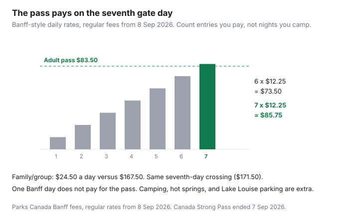

Travel · Canada
Is a Parks Canada Discovery Pass Worth It? A Household Break-Even Framework
Families buy the Discovery Pass for a single day in Banff, or they pay daily at four gates and discover the annual price on the way home. Both mistakes are the same mistake: they counted nights, or hope, instead of entries they will actually pay.
Fees below are the regular rates on Parks Canada’s Banff fee page after the Canada Strong Pass. Free admission and the camping discount ended 7 September 2026. Regular fees apply from 8 September 2026. If you already hold a pass that was valid during a Strong Pass window, Parks Canada says it was extended. Use the expiry calculator on their site before you buy a second one.
Disclosure: There is no natural affiliate product in a park-pass decision. Saving Optimizer does not claim a Parks Canada partnership. Fees were read from Parks Canada pages on 23 Sep 2026. The Canada Strong Pass free-admission window ended 7 Sep 2026. Education only.
Key takeaways
- The Discovery Pass is admission for 12 months at participating Parks Canada places. It is not camping, not hot springs, and not parking that normally has its own fee (including Lake Louise lakeshore).
- Regular fees from 8 September 2026, after the Canada Strong Pass ended on 7 September: adult daily $12.25, senior $10.75, youth free, family/group daily $24.50. Discovery: adult $83.50, senior $71.50, family/group $167.50. Banff’s fee page is the source. Other places can charge less.
- At those daily rates the adult pass costs less than daily admission on the seventh paid entry (6 × $12.25 = $73.50; 7 × $12.25 = $85.75). The family/group pass crosses on the seventh vehicle-day too.
- A pass does not cover provincial parks. Banff plus Kananaskis, or a national historic site plus a provincial park, is two systems.
- One day in Banff does not pay for the pass. A week inside one park may be a single entry if you never leave the gate. Count entries, not hotel nights.
- Printable terms: the pass is non-refundable, not transferable, and void if resold. The holder has to be present.
What the pass covers (admission) and what it does not (camping, parking, shuttles)
An annual Discovery Pass covers admission to Parks Canada’s participating national parks, national historic sites, and national marine conservation areas for 12 months. Parks Canada describes it as admission to more than 80 places, so you are not buying “Banff” and hoping. Daily privileges that come with an ordinary entry pass are included. The printable terms, date-modified 26 February 2025 and still the public terms, then list what is not:
- Camping fees, including frontcountry, backcountry overnight use, and roofed stays. A pass plus a campsite is two purchases. The Strong Pass camping discount is over.
- Hot springs that charge their own admission (the terms name services such as the Canadian Rockies hot springs; Parks Canada’s Strong Pass notes listed Radium, Miette, and Banff Upper Hot Springs as still paid even when park entry was free).
- Parking that normally has a fee. Lake Louise lakeshore and Fairview day-use parking are not included in admission or in a Discovery Pass. The shuttle and its park-and-ride have their own rules. Budget the parking or the shuttle as a separate line.
- Guided tours, fishing licences, firewood, and other services that are not part of a daily entry.
- Commercial groups. A family/group pass is not a tour product.
If the expensive part of your trip is the campsite, the pass will not fix it. Price camping on the reservation system you will actually use, then decide the pass only on admission days.
Adult vs family/group pass pricing and who counts toward the pass
Parks Canada’s own labels: an adult is 18 to 64, a senior is 65 or over, a youth is 6 to 17, and youth admission is free. A family/group is up to seven people arriving in a single vehicle. It is not any seven people who meet at the trailhead, and it is not a second car.
| Who | Daily admission | Discovery Pass |
|---|---|---|
| Adult (18–64) | $12.25 | $83.50 |
| Senior (65+) | $10.75 | $71.50 |
| Youth (6–17) | Free | Covered when they are part of the arriving group; they do not need their own adult pass |
| Family/group, up to 7 in one vehicle | $24.50 | $167.50 |
Two adults in one car are not always a “family” purchase. Compare two adult passes (2 × $83.50 = $167) with the family/group pass ($167.50). At these prices the family/group pass is the one to buy once a third person, or a pattern of group entries, is real. Two seniors are 2 × $71.50 = $143, which beats the family/group pass if no one else is in the car. Do the headcount before you tap the family button out of habit.
Break-even day count using current daily admission rates for parks you actually visit
Break-even is paid entries at the daily rate of parks you will visit, not a national average and not nights in a hotel.
Adult, using the Banff daily rate: 6 × $12.25 = $73.50, which is under the $83.50 pass. 7 × $12.25 = $85.75, which is over it. The seventh paid adult entry is the first day the annual pass costs less than daily admission. Senior: 6 × $10.75 = $64.50, under $71.50; 7 × $10.75 = $75.25, over it. Family/group: 6 × $24.50 = $147.00, under $167.50; 7 × $24.50 = $171.50, over it. Same seventh day.

Adjust the rate if your gates are cheaper than Banff. A historic site with a lower daily fee takes more visits to clear $83.50. A place that is free never counts. Also adjust for how entry works: if you drive into Banff once and stay inside the park for a week, you may be paying one admission, not seven. The pass does not become a good buy because you hiked every morning. It becomes a good buy because you will cross a pay gate enough times — Banff and Yoho and Kootenay and Jasper, or several weekends in a year — at rates like these.
One Saturday in Banff is a daily pass. Buying the annual pass “so we might go again” is a $83.50 bet against a trip you have not planned. The printable terms say the pass is non-refundable.
Stack with provincial park passes when your trip crosses systems
Parks Canada and the provincial systems do not honour each other’s passes. A Discovery Pass will not get you into a provincial park that charges admission or requires a day-use pass. The reverse is also true.
- Alberta. Banff, Jasper, Yoho, Kootenay, and Waterton are Parks Canada. Kananaskis and many other foothill sites are provincial. A Rockies week that crosses the boundary needs both fees on the sheet, plus camping in whichever system you booked.
- British Columbia. Pacific Rim, Glacier, and the mountain parks are federal. Provincial parks, including ones that use a day-use pass, are not. Read the specific park. Some busy trails are a reservation problem, not a Discovery Pass problem.
- Ontario and Québec. A long weekend that is entirely Algonquin, or a Sépaq stay, is not a Discovery Pass trip. A trip that adds a national historic site or a national park is when the federal pass enters the math.
Stack the passes only when both systems are on the route. Buying the federal pass because the provincial park was confusing is how the seventh-day test fails on day one.
Shoulder-season itineraries where the pass still pays before peak crowds
The Canada Strong Pass made summer 2026 (19 June through 7 September) a free-admission season, on top of earlier windows in 2025 and the 2025–26 holidays. That season is over. From 8 September 2026 you pay again. Shoulder trips after that date — mid-September in the mountains, late May and June before a future free window if one is announced — are when a pass can still make sense without July crowds, if the entry count clears seven at Banff-like rates.
Do not buy the pass in October for a single Thanksgiving weekend and call it shoulder-season strategy. Two gate days are a daily-entry trip. A September circuit that enters several mountain parks, or a set of fall weekends you have already put on a calendar, is the itinerary that clears the line before the snow does. Winter visiting is real and thinner: fewer fully open facilities, and fewer paid gates if you only go once. Run the count on the gates that will be open.
Camping in the shoulder is still a camping fee. The pass does not get cheaper because the campground is quieter.
Buy timing, digital vs physical, and common refund/transfer myths
Buy when the first paid visit is on the calendar and the entry count says the pass wins, or when you are close enough that the convenience of one pass at several gates is worth a few dollars. Do not buy in January to feel organized if the trip may not happen. The printable terms say the pass is non-refundable, not transferable, and void if resold. The holder must be present. You cannot hand it to a friend for a weekend and stay home. A family/group pass still needs the right people, in one vehicle, with the holder there.
Digital versus physical, from those same terms: a printable pass is printed and displayed on the dash, or shown on a phone so the first Parks Canada site can exchange it for a hangtag. It has to be signed. It expires on the last day of the month shown, and the validity is 12 months from purchase in the ordinary case. Passes that overlapped a Canada Strong Pass period were extended automatically. That extension is the myth to retire in the other direction: people either assume the old pass died, and buy a duplicate, or assume a pass lasts forever. Check the expiry tool.
Myths that cost money: camping is included (it is not); parking at Lake Louise is included (it is not); the pass works at provincial parks (it does not); a pass can be transferred or resold (the terms say no); one Banff day pays for it (at $12.25 versus $83.50, it does not). If lodging is the other large line on a mountain week, price it with the all-in lodging sheet. The pass will not absorb a cleaning fee either.
Sources & date stamps
- Parks Canada, Banff National Park fees — regular admission and Discovery Pass prices as of 8 Sep 2026 (adult daily $12.25, senior $10.75, youth free, family/group daily $24.50; Discovery adult $83.50, senior $71.50, family/group $167.50). Used 23 Sep 2026.
- Parks Canada, passes and permits, and the Canada Strong Pass end note — free admission ended 7 Sep 2026; regular fees from 8 Sep 2026; annual passes valid during those windows were extended. Used 23 Sep 2026.
- Parks Canada, printable Discovery Pass terms (modified 26 Feb 2025) — camping, hot springs, separately priced parking, and guided services excluded; non-refundable; not transferable; holder present.
- Parks Canada, Lake Louise shuttle FAQ — lakeshore parking is not included in admission or a Discovery Pass.
Frequently asked questions
Is a Parks Canada Discovery Pass worth it for one Banff day?
No, at the regular rates in effect from 8 September 2026. Adult daily admission is $12.25 and the adult Discovery Pass is $83.50. Six adult entries at that daily rate cost $73.50. The seventh costs $85.75, which is when the pass costs less than paying daily. One day is a daily pass.
Does the pass include camping or Lake Louise parking?
No. Camping, backcountry overnight use, hot springs that charge admission, and parking that normally has its own fee are extra. Parks Canada says Lake Louise lakeshore parking is not included in admission or a Discovery Pass. The shuttle is a separate booking.
Who counts as a family?
Parks Canada’s family/group admission is up to seven people arriving in a single vehicle. Youth aged 6 to 17 are free on daily admission. Two adults are often cheaper as two adult passes than as a family/group pass at these prices ($167 versus $167.50). Add the family/group pass when more people are actually in the car.
Does it work at provincial parks?
No. Ontario Parks, B.C. Parks, Alberta provincial sites such as Kananaskis, and Sépaq are different systems. Buy the Discovery Pass for Parks Canada gates only, and stack a provincial pass when the route crosses them.
Can I get a refund or give the pass to someone else?
The printable terms say the pass is non-refundable, not transferable, and void if resold. The holder has to be present. Passes that were valid during a Canada Strong Pass window were extended — check Parks Canada’s expiry tool before you buy another.